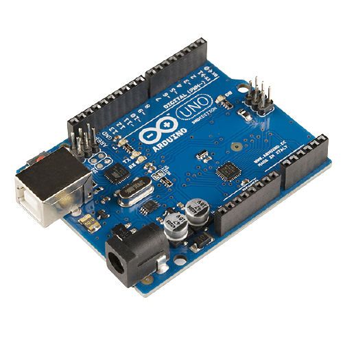

Arduino යනු ඉලෙක්ට්රොනික ව්යාපෘති තැනීම සඳහා භාවිතා කරන විවෘත මූලාශ්ර වේදිකාවකි. පරිගණක කේතය භෞතික පුවරුවට ලිවීමට සහ උඩුගත කිරීමට භාවිතා කරන ඔබේ පරිගණකයේ ක්රියාත්මක වන භෞතික ක්රමලේඛගත කළ හැකි පරිපථ පුවරුවක් (බොහෝ විට මයික්රො පාලකය ලෙස හැඳින්වේ) සහ මෘදුකාංගයක් හෝ අයිඩීඊ (ඒකාබද්ධ සංවර්ධන පරිසරය) යන දෙකෙන්ම ආර්ඩුයිනෝ සමන්විත වේ. ආර්ඩුයිනෝ වේදිකාව ඉලෙක්ට්රොනික උපකරණ වලින් පටන් ගත් මිනිසුන් අතර හොඳ හේතුවක් ඇතුව ඉතා ජනප්රිය වී ඇත. බොහෝ විට ක්රමලේඛගත කළ හැකි පරිපථ පුවරු මෙන් නොව, නව කේත පුවරුව පුවරුවට පැටවීම සඳහා ආර්ඩුයිනෝ සඳහා වෙනම දෘඩාංග කැබැල්ලක් (ක්රමලේඛකයෙකු ලෙස හැඳින්වීම අවශ්ය නොවේ) - ඔබට සරලවම USB කේබලයක් භාවිතා කළ හැකිය. ඊට අමතරව, ආර්ඩුයිනෝ අයිඩීඊ මඟින් සී ++ හි සරල කළ අනුවාදයක් භාවිතා කරන අතර එමඟින් ක්රමලේඛනය ඉගෙනීම පහසු කරයි. අවසාන වශයෙන්, ආර්ඩුයිනෝ මඟින් මයික්රෝ පාලකයේ කාර්යයන් වඩාත් ප්රවේශ විය හැකි පැකේජයක් බවට බිඳ දැමූ සම්මත ආකෘති සාධකයක් සපයයි.
| Board | Specifications |
|---|---|
|  | Microcontroller: ATmega328P Operating Voltage: 5V Input Voltage (recommended): 7-12V Inout Voltage (limit): 6-20V Digital I/O Pins: 14 (of which 6 provide PWM output) PWM Digital I/O Pins: 6 Analog Input Pins: 6 DC Current per I/O Pin: 20 mA DC current for 3.3V Pin: 50 mA Flash Memory: 32 KB (ATmega328P) of which 0.5 KB used by bootloader SRAM: 2 KB (ATmega328P) EEPROM: 1 KB (ATmega328P) Clock Speed: 16 MHz LED_BUILTIN: 13 Length: 68.6 mm Width: 58.4 mm Weight: 25 g |
| name | data |